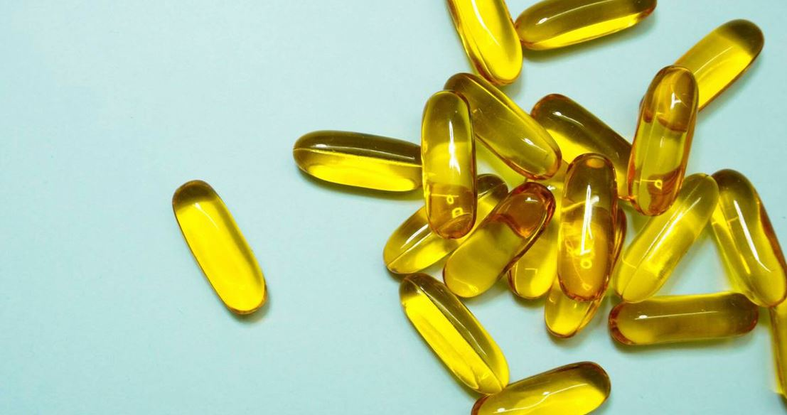

La vitamina B12 es un suplemento esencial que no produce nuestro organismo, ni los animales, ni las plantas. Este nutriente proviene de las bacterias y nos la tenemos que ingeniar para incorporar en nuestra alimentación.
¿Para qué sirve la B12? Cumple un papel vital en el funcionamiento del cerebro, la metabolización de proteínas y la producción de glóbulos rojos, entre otras cosas. ¿Cómo podemos obtenerla? Generalmente, de los productos de origen animal, ya que estos la obtienen al ingerir estas bacterias del suelo, o el agua que no ha sido higienizada, e incluso, muchas veces, se los inyecta con ella.
Sin embargo, actualmente los químicos empleados en la agricultura están exterminando estas bacterias, por lo que, tanto las personas veganas como aquellas que no lo son necesitan sumplementarse con B12 de manera complementaria, ya que es muy difícil obtenerla de manera natural. Siempre consultá con tu nutricionista la dosis y frecuencia de suplementación que necesitás. Esta es la forma más económica y segura de nutrirse con esta vitamina tan importante.
¿Qué pasa si tengo déficit de B12? Esto puede ser la causa de anemia, problemas neurológicos o pérdida de peso. ¡Cuidado! Muchas veces los análisis indican que este nutriente está cubierto pero no se está midiendo la parte activa de este. Para chequear los verdaderos niveles de B12, hay que evaluar la homocisteína. Además, nuestro organismo almacena reservas de esta vitamina que duran un tiempo, por lo que el análisis puede ser engañoso con los resultados.
Si llevás una alimentación vegana es indispensable, pero también en la alimentación omnívora se recomienda la suplementación para alcanzar la dosis necesaria. Todxs necesitamos la vitamina B12.